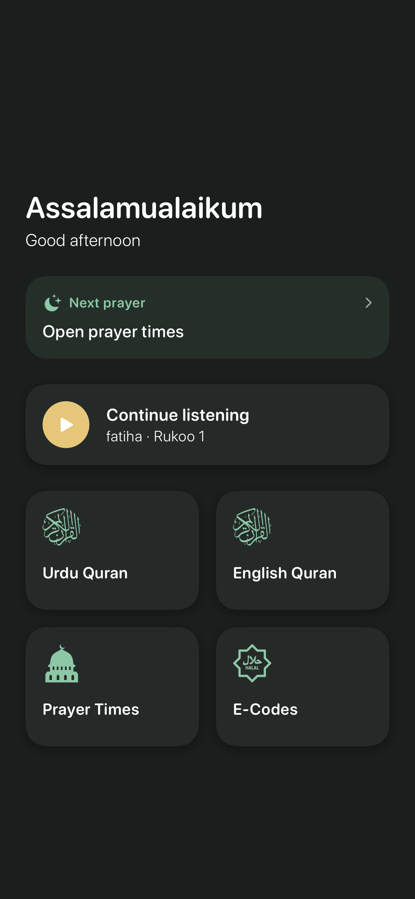
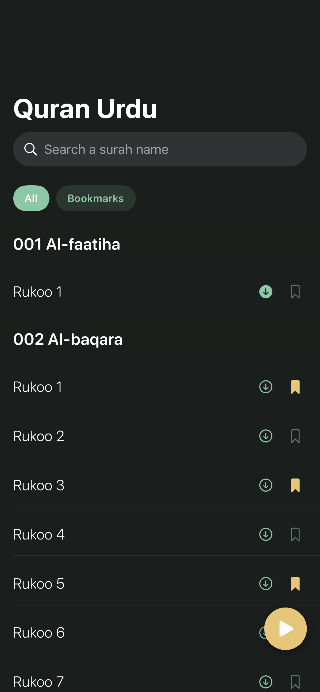
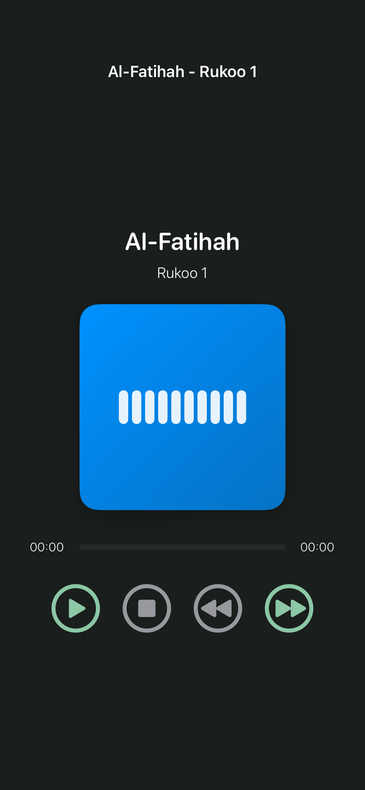
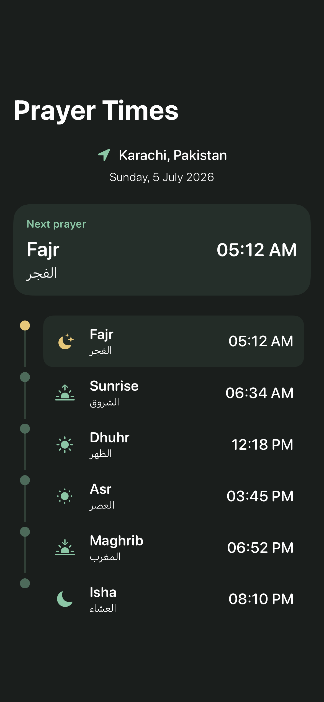
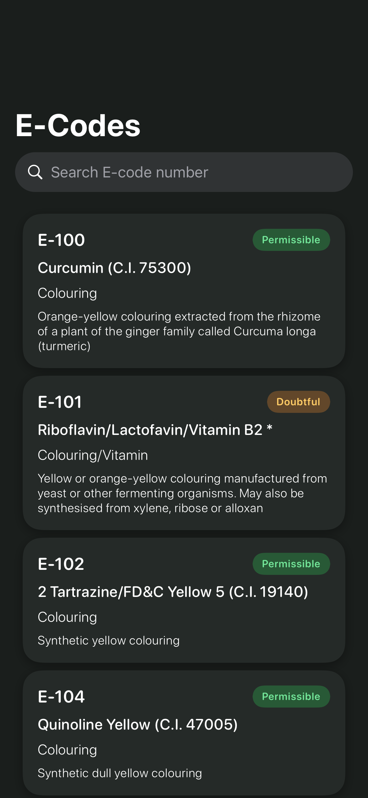

Quran Education · Maintainer docs
Minimalist Islamic SwiftUI Redesign
Preserves the redesign plan for future reference and notes what shipped (including post-plan refinements). Prefer this page over chat history when extending the home hub, design system, or widget.
Goals
- Stay on native SwiftUI (iOS 16.2+, Adhan + SnapshotTesting unchanged).
- Replace the flat card menu with a calm home hub.
- Introduce a small design system (tokens + shared components).
- Add engagement: next-prayer countdown, continue-listening hero, rukoo bookmarks, subtle haptics, and a WidgetKit next-prayer widget.
- No analytics, accounts, or first-party networking.
Visual direction
| Token | Light | Dark |
|---|---|---|
| Sage / icon | Deep sage #1B3A2F |
Luminous sage (adaptive) |
| Brass CTA | Muted gold #B08D57 |
Brighter brass (adaptive) |
| Canvas | Mist #F4F7F5 |
Charcoal |
| Shape | 20pt continuous corners, generous whitespace | |
| Motif | None — plain mist / charcoal canvas (decorative star watermark removed) | |
Accessibility: never status-by-color-only (E-Code chips include labels).
Prefer AppTheme.Colors.icon / adaptive sage–brass over hard-coded dark greens.
Home hub flow
flowchart TB
subgraph home [HomeHub]
Greeting
NextPrayerCard
ContinueCard
FeatureGrid
end
Greeting --> NextPrayerCard
NextPrayerCard --> PrayerTimes
ContinueCard --> Player
FeatureGrid --> QuranUrdu
FeatureGrid --> QuranEn
FeatureGrid --> PrayerTimes
FeatureGrid --> ECodes
Widget --> NextPrayerCard
Final screens — light & dark
Latest light/dark screen captures from the iOS app snapshot suite.
Home hub


Quran list


Player


Prayer times


E-Codes


What shipped
Design system — Quran Education/DesignSystem/
AppTheme— adaptive colors, spacing, radiiAppTheme.Colors.navigationTitle— white in dark mode, black in light mode (applied once inQuran_EducationApp.initviaUINavigationBarAppearance)SoftGeometryBackground— solid adaptive canvas (no decorative motifs)QECard,QEPrimaryButton,Haptics
Home hub — MenuView
- Time-aware greeting (Assalamualaikum + morning/afternoon/evening)
- Next-prayer card (tap → Prayer Times)
- Continue listening →
ResumePlayerDestination→ player (auto-play) - Empty state prompts starting with Urdu Quran
- 2×2 feature tiles; typed
HomeDestinationnavigation - Help sheet: privacy bullets + Terms & Conditions web link
- Share: app icon (
LaunchLogo) + message + landing page quran-education-app
Quran
- Bookmark toggle per rukoo; All / Bookmarks filter chips
- Persist via
UserPrefHelper(surahKey|rukooIndexper language) - Brass FAB for resume; sage visualizer on player
Prayer times
- Hero next-prayer + vertical timeline
- Adhan UTC dates formatted with the location timezone from reverse geocoding
- Writes App Group snapshot for the widget
E-Codes
- Soft status chips with label + color; VoiceOver on rows
- Adaptive chip colors for dark mode
Launch
- Mist background + centered
LaunchLogo(app icon asset)
Widget — QuranEducationWidget
- Small/medium “Next prayer” widget
- Deep link
quraneducation://prayer→ home opens Prayer Times - Shared model in Shared/NextPrayerSnapshot.swift
- App Group:
group.com.mi.Quran-Education
Tech notes for maintainers
| Area | Detail |
|---|---|
| Navigation | MenuView owns NavigationStack + navigationDestination.
Large titles keep the standard layout (title above search). Title color comes from
AppTheme.Colors.navigationTitle. |
| Startup | HomePrayerModel.startIfNeeded() defers location/timer work; widget reload only when snapshot data changes |
| Prefs | UserPrefHelper — resume playback + bookmarks |
| Entitlements | App + widget App Group entitlements |
| URL scheme | quraneducation in Info.plist |
| Localization | Keys in en.lproj / ur.lproj + L10n |
| XcodeGen | App sources include app folder + Shared; widget embeds into app |
| Lint paths | SwiftFormat also lints Shared and QuranEducationWidget |
Implementation order (historical)
- DesignSystem tokens + soft background + shared components
- Home hub + prayer countdown model + themed navigation
- Quran bookmarks + list/player restyle
- Prayer timeline + App Group bridge
- E-Code restyle + a11y
- Widget target + deep link
- Localization, snapshots, lint
Post-plan refinements (also shipped)
- Quran list row vertical alignment (title / download / bookmark)
- Launch logo instead of text-only splash
- Continue listening opens player (not list)
- Dark-mode adaptive icon/chip colors
- Nav title color via
AppTheme.Colors.navigationTitle(light/dark) - Location timezone for prayer formatting
- Help T&C link; share landing page + app icon
Snapshots
Gallery images above are light/dark captures from the iOS app’s screenshot test suite (iPhone-sized references). They document the shipping visual design until the App Store release.
Android parity
iOS leads visually after this redesign. Feature set (Quran / Prayer / E-Codes / offline / resume) stays equivalent; bookmarks + home-screen widget are iOS-first engagement extras.